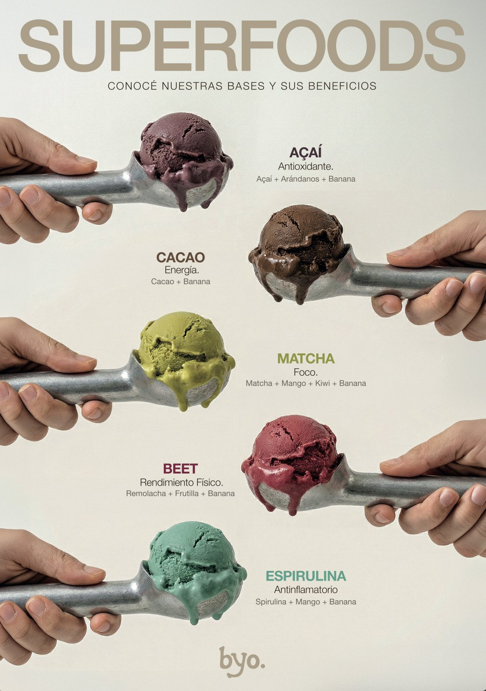
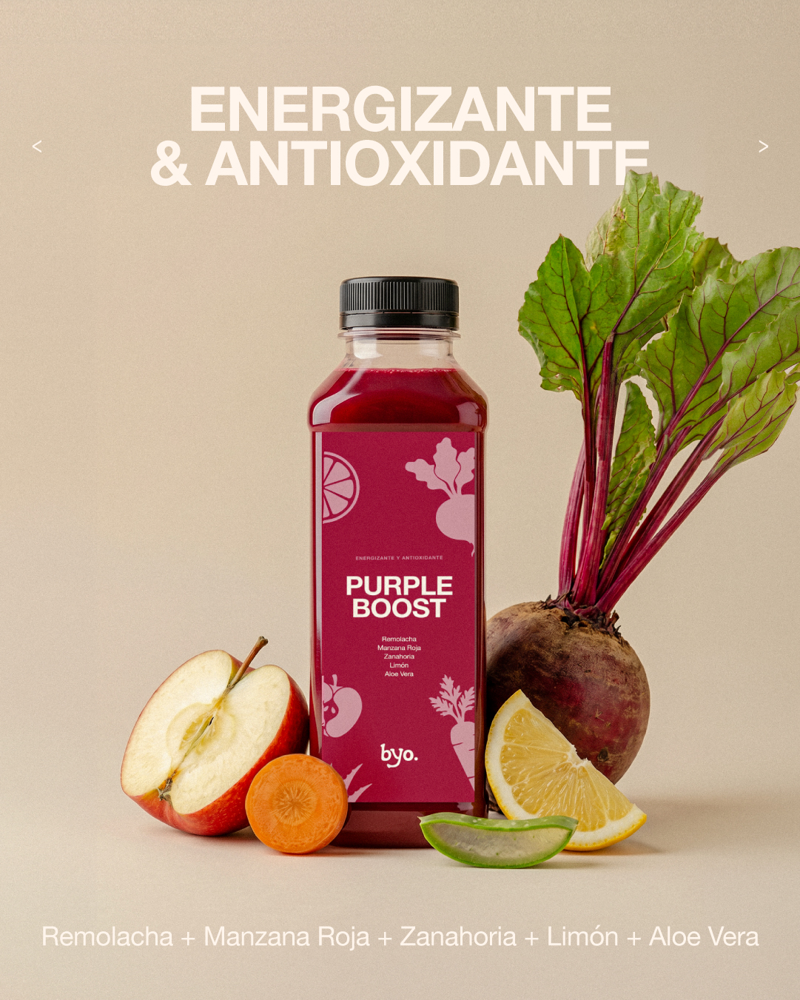
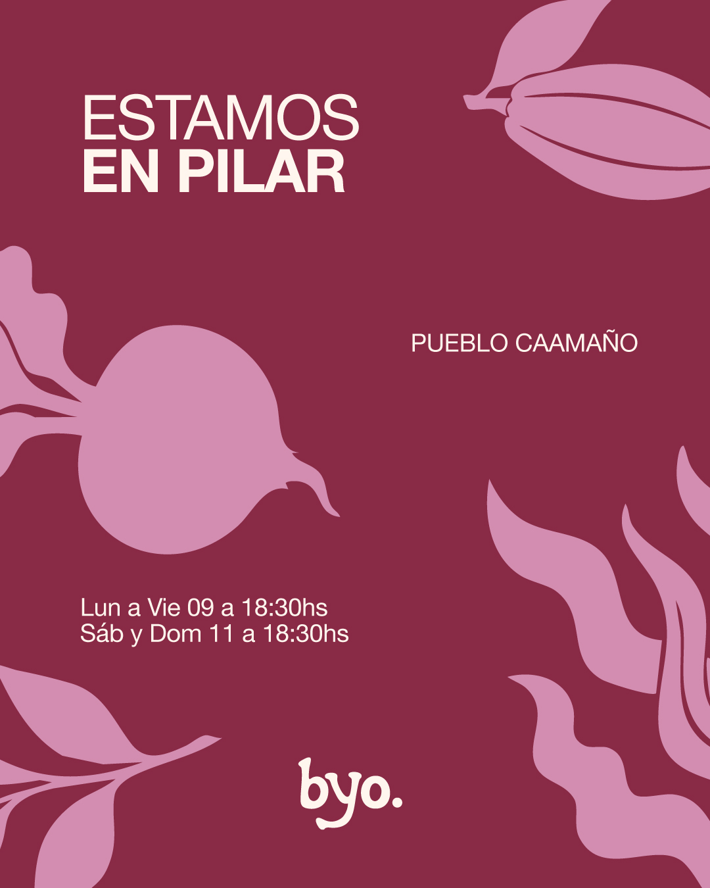

[ Byo. Superfood Lab ]

Byo nace como un local de superfood bowls, hot bowls, protein shakes, jugos y shots en Pilar. El desafío no era simplemente crear una marca de alimentos saludables —el mercado está saturado. El desafío era construir una identidad que comunicara funcionalidad, autenticidad y vitalidad, con un concepto lo suficientemente fuerte como para diferenciarse en un contexto local.
El brief era claro: la marca debía orbitar alrededor de cinco superalimentos específicos (cacao, matcha, espirulina, remolacha, acaí) como núcleo estratégico. Eso fue el punto de partida.
Cinco superalimentos. Un sistema visual. IA como dirección creativa.

Diseñé la identidad visual completa y dirigí el arte de todos los touchpoints: logo, paleta cromática, cartelería, uniformes, menús, envases y presencia en redes. La decisión creativa central fue hacer de los cinco superalimentos el eje absoluto de la marca. No solo de la comunicación —de TODO. La paleta cromática surgió de ellos. El sistema de ilustraciones surgió de ellos. Cada color representa un superfood, cada ilustración es un superhéroe visual.
Desarrollé un sistema completo de iconografía donde cada superfood se traduce en representación visual única, funcional y reconocible. La marca no es un logo aplicado; es un sistema vivo donde los superalimentos son el lenguaje.
La materialización integral de la identidad —fotografía de productos, video de local, renders del espacio, contenido para redes sociales— se ejecutó utilizando IA como herramienta de dirección creativa. Cada visual fue direccionado bajo criterio de art direction, cada iteración respondía a decisiones estéticas y estratégicas específicas. IA no reemplazó la creatividad; amplió la capacidad de ejecutarla.
El resultado es una marca con coherencia visual total, donde cada asset —independientemente de cómo fue generado— habla el mismo idioma visual. Control creativo sin compromisos.


El local abrió en 2025. El concepto funcionó: la identidad comunica funcionalidad antes de que alguien entre. Cada color cuenta qué esperás encontrar. Cada ilustración refuerza el mensaje de nutrición consciente y real.
El feedback fue inmediato y positivo. La marca no vende "comida saludable"; vende poder, elección, ingredientes que funcionan. Y eso se ve en cada touchpoint.